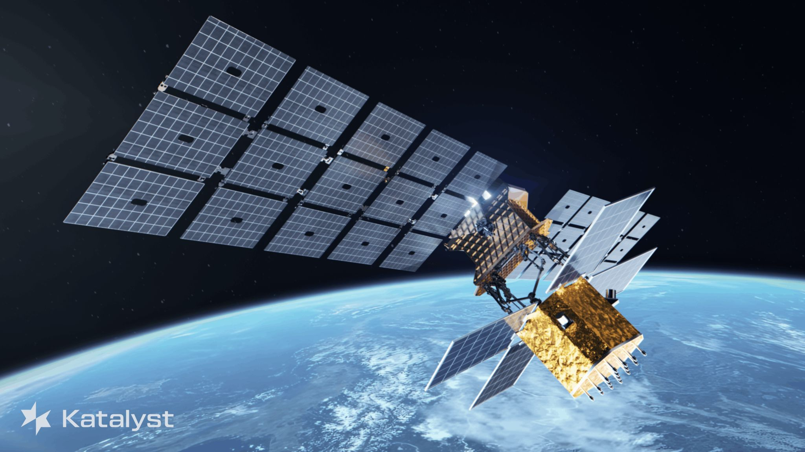
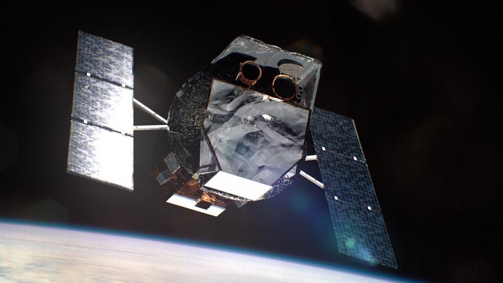

Two Birds. One Stone.
Tripp Josserand-Austin | EntroMorphic
On August 19, NASA confirmed that Katalyst Space Technologies' LINK spacecraft will not capture or boost the Neil Gehrels Swift Observatory as planned. Swift will reenter Earth's atmosphere later this year without intervention. In September 2025, NASA awarded a $30 million contract to Katalyst, a Flagstaff startup tasked with fielding the mission on an extraordinarily compressed timeline.

The mission
In under twelve months, the team designed, built, and tested LINK, ran thermal vacuum qualification at Goddard's Space Environment Simulator, integrated it into a Pegasus XL rocket, and air-launched it from a modified L-1011 over the South Pacific.
The objective was something no one has pulled off: commercial robotic capture of a government satellite in a decaying orbit that was never designed to be serviced or repositioned by an external system.
A failure cascade ultimately made the capture-and-boost mission untenable. And that cascade exposed a gap the on-orbit servicing industry will have to close. When the ground goes silent, does a spacecraft know enough about its own physical state to act safely on its own?
The cascade
During commissioning, LINK encountered attitude control problems resulting in a multi-axis spin. Communications with the ground became intermittent, then were lost. The initiating cause of the attitude upset has not been publicly established.
After 24 hours without contact, the spacecraft's autonomous recovery logic triggered a hard bus reset. According to public accounts, that reset caused a temperature spike in the reaction wheel control electronics, ultimately rendering two of LINK's three reaction-wheel control channels inoperable.
- Initial anomaly
- Attitude upset — multi-axis spin
- Comms blackout
- Autonomous recovery procedure, apparently unaware of the physical state of the systems it was about to power-cycle
Each step was a reasonable response in isolation. Together, they ended the capture-and-boost objective.
LINK carries three reaction wheels; the minimum for three-axis reaction-wheel control, with no reaction-wheel redundancy. That was a defensible design decision given the constraints: a 425 kg launch mass, a $30 million contract, and a twelve-month sprint from award to launch. Swift carries six wheels and returned to science operations using five after a wheel failure in 2022. Swift also had 17 years of institutional engineering and a cost envelope more than 8x that of LINK. Comparing the two on redundancy alone misses the point.

Blind autonomy
The autonomous bus reset that reportedly disabled two of LINK's reaction-wheel control channels was clock-driven.
Upon loss of communications for 24 hours, reset.
Logic that lacked sufficient context about the electrical and thermal states of the systems it was about to cycle power.
This is a known challenge in autonomous spacecraft operations. Timer-based recovery is standard practice, and it works in the vast majority of cases. The problem surfaces when the physical state of the hardware has drifted into a condition where the standard recovery procedure causes harm.
Recovery beyond the point of no return
Flynn is a near-zero SWaP-C, embedded central nervous system that enrolls on nominal operations per mode, from the sensor to the satellite. In addition to equipment and process anomaly detection, Flynn continuously emits a real-time health signal for the equipment, component, system, or subsystem it is monitoring.
Factory acceptance testing is the enrollment window. During thermal vacuum qualification at Goddard, Flynn instances monitoring the electrical bus, the reaction wheel electronics, the thermal subsystem, and the cold gas thrusters would have learned the nominal envelope for each system under each operational mode. From that point forward, Flynn is on-device and watching.
In flight, Flynn detects when a monitored signal begins trending toward the upper or lower bounds of its enrolled mode-specific thresholds while the system is still within its learned operational envelope. Not after 24 hours. Not after a comms blackout. At the moment the trend begins, while the system is still within its operational envelope.
Specific to LINK, Flynn could have been continuously generating equipment-health intelligence leading up to and throughout the event. By the time autonomous recovery logic is called upon to act, LINK's flight systems would have real-time health signals describing the condition of the equipment at their command.
LINK was not equipped with Flynn. And no one can responsibly claim that any single technology would have saved the mission. The source of LINK's attitude upset remains unknown. But the subsequent failure sequence illustrates precisely the class of problem Flynn is designed to address for autonomous systems.
The black pearl
The on-orbit servicing sector is at an inflection point. LINK was meant to demonstrate that commercial robotic servicing works. The loss of its boost objective yields essential intel for every company building servicing vehicles.
Flynn closes the gap between what a spacecraft physically experiences and what its autonomous systems know when making decisions in-flight.
On hardware-constrained platforms where redundancy is a luxury, closing that gap with deterministic, edge-resident intelligence is mission-critical.
Swift will reenter the atmosphere later this year with no planned replacement. The gap it leaves in time-domain astrophysics is enormous. LINK's mission continues in a reduced capacity, with the opportunity to return valuable rendezvous and proximity-operations data.
"We took on this high-risk, high-reward challenge and are proud of the milestones we reached along the way."Katalyst CEO
Building and launching a novel servicing spacecraft in under a year is an epic achievement that the industry will build on.
The next generation of autonomous spacecraft demonstrably needs health and wellness data from the bare metal up.
Flynn is the force multiplier for future autonomous mission and safety-critical systems.
Let's connect
If you're designing, building, or deploying systems with risk margins thinner than the upper atmosphere, let's connect.
I am the founder of EntroMorphic and the creator of Flynn. Deterministic, real-time anomaly detection and equipment health intelligence embedded at the edge of the world and beyond.
tripp@inlikeflynn.io →